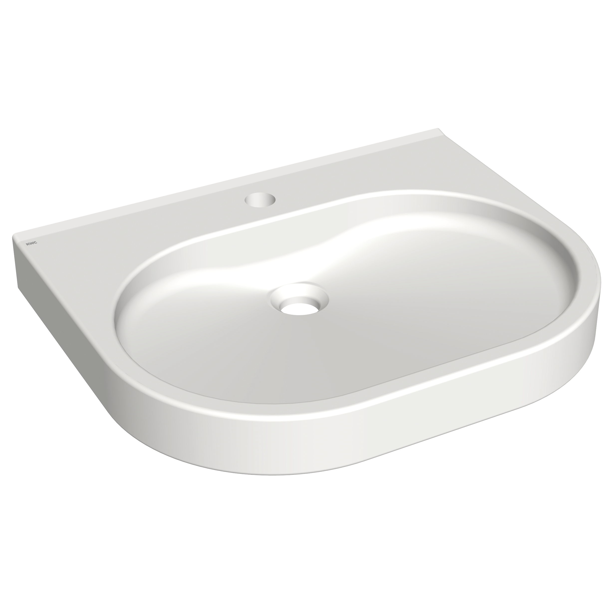

KWC Aquarotter GmbH
VARIUScare Einzelwaschtisch barrierefrei
ANMW503 - 2030020961
VARIUScare Einzelwaschtisch aus kunstharzgebundenem Mineralwerkstoff MIRANIT, Farbton Alpinweiß. Unterfahrbar, mit integriertem Griffrand. Mit nahtlos eingeformter Mulde ohne Überlauf. Mit Armaturenbohrung. Befestigung an Beckenrückwand. Hintere Schwallkante, inklusive Befestigungsmaterial.
Abmessungen 550 x 120 x 450 mm (B x H x T)
Kontakt
Parkstraße 1-5 | 14974 Ludwigsfelde | Deutschland
Telefon +49 3378 818455 | kwc-info.de@kwc.com